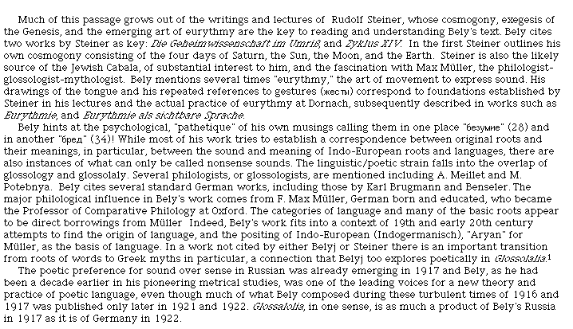

Notes 2

Bely does cite later in the work [F] Max Müller, [Lectures on the] Science of Language. I have had access to the fifth revised edition in English (London: 1866) and my page references are to that volume. Bely could have discovered Müller through Rudolf Steiner who refers to Müller in his lecture "Glauben und Wissen: Johannisfest und Osterfest" (Prague April 17, 1914).light is -- a colored flower There is a complex play of words with the Russian [svet] meaning "light," and the Russian [tsvety] meaning "flowers." In the singular Russian [tsvet] means "color."
the tongue The Russian word [yazyk] for "tongue" is also the word for "language." The Russian word is also related to the Indo-European root found in Latin "lingua" "language or tongue." The English "tongue" is related to the older Latin "dingua," and IE dnguha "tongue". The use of "tongue" for "language," for example the ability of the Apostles "to speak in tongues," i.e. many languages, is acceptable in some but not all English contexts. Here again Bely relies primarily on the association, equivalence, in Russian to identify "language" with one's "tongue." It is the movement of the tongue that will become essential in the (re-) creation of his special language. Teutonic *tungon is cognate with Old Latin dingua. See Mann, 153, Pokorny 223. See the OED, VIII, 634 and XVIII, 2122, and Vasmer IV, 550, 551.
the palate The palate or roof of the mouth [nyoba] is orthographically related to the Russian word [nebo] for "sky" or "heavens."